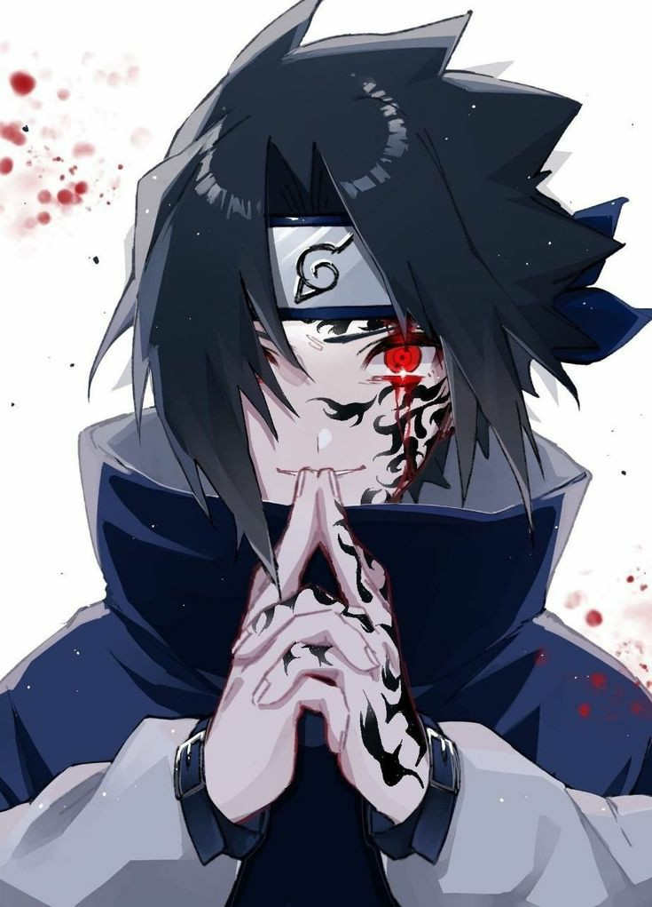
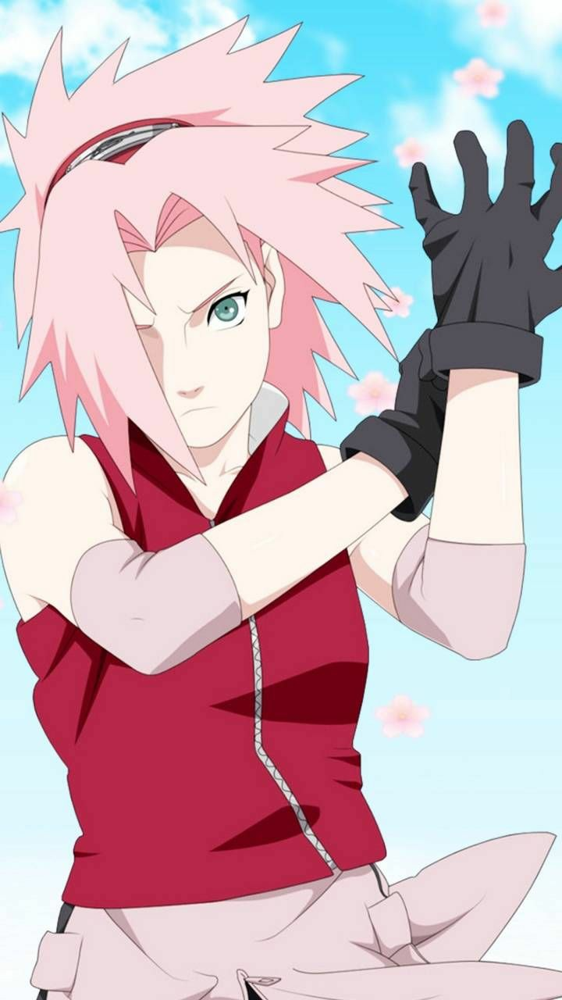

### أنمي ناروتو (Naruto): تدور القصة حول صبي يدعى ناروتو أوزوماكي، الذي يحلم بأن يصبح الـ"هوكاجي"، وهو أقوى نينجا في قريته. ناروتو يعاني من الوحدة لأنه يحمل بداخله وحشًا قويًا يُدعى "الثعلب ذو التسعة ذيول"، الذي هاجم قريته في الماضي. رغم هذا، يتمتع ناروتو بروح مرحة وعزيمة لا تنكسر، وهو مستعد لفعل أي شيء ليحظى باعتراف الناس. على طول رحلته، يقابل أصدقاء مميزين مثل ساسكي وساكورا، ويخوض معارك ضد أعداء أقوياء. القصة مليئة بالتضحيات والصداقة، مع تركيز على تحقيق الأحلام والشجاعة في مواجهة الصعاب.
ناروتو أوزوماكي هو نينجا يحلم بأن يصبح الهوكاجي ويحظى باحترام الجميع.
ساسكي أوتشيها هو آخر فرد من عشيرة أوتشيها القوية، ويبحث عن الانتقام من أخيه إيتاتشي.
ساكورا هارونو هي نينجا قوية وتعد من أعضاء الفريق 7 مع ناروتو وساسكي.
العودة إلى الصفحة الرئيسية